| SOURCE | TITLE| IMAGE MATCH | click to source page |
| ebid.net | GB, King Edward VII definitive, green 1904, ½d, #3 on eBid United States | 189865851 | 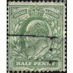 |
| seemystamps.com | See My Stamps! - A Place to Show Off Your Stamp Collection | Page 3 | 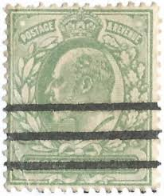 |
| Alamy | Great Britain Postage Stamp - King George VI Stock Photo - Alamy | 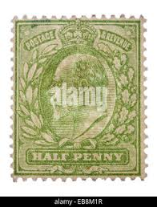 |
| eBay | POSTED Postcard Rotary Real Photo Opalette Series 1/2 penny Stamp Southampton | eBay | 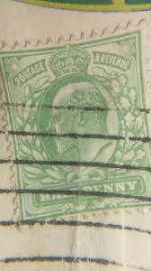 |
| eBay | Halfpenny Half Penny Stamp | eBay | 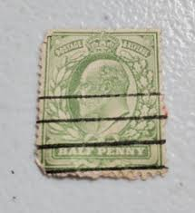 |
| eBay | King Edward Penny Stamp | eBay | 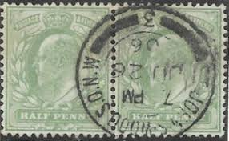 |
| eBay | GREAT BRITAIN SG-245, SCOTT # 135, USED, VERY FINE, GREAT PRICE! | eBay | 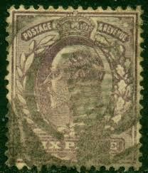 |
| HipStamp | Great Britain 1904 Sc#143, SG#217 1-1/2d Green KEVII USED-VG. | Great Britain, General Issue Stamp / HipStamp | 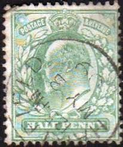 |
| YouTube | Daily Bill Search: Where's George Bill & Star Note Found Searching for Rare and Error Banknotes - YouTube | 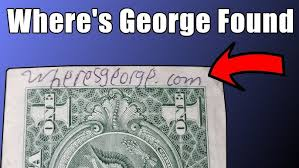 |
| eBay UK | Raphael Tuck & Sons English Derbyshire Single Unit Collectable Topographical Postcards for sale | eBay UK | 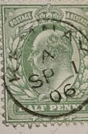 |
| Stamp Auction | Spink Shreves Galleries Sale - 136 Page 36 | 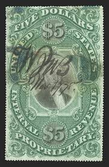 |
| HipStamp | Great Britain #143 1/2P King Edward 7, used stamp VF | Great Britain, General Issue Stamp / HipStamp | 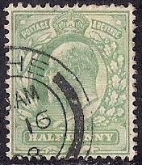 |
| Mystic Stamp Company | 132 - 1902 Great Britain, King Edward VII - Mystic Stamp Company | 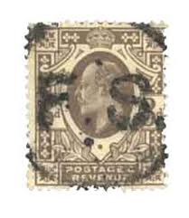 |
| eBay | Great Britain 159 Used - George V (SG51wi) - Watermark Inverted | eBay | 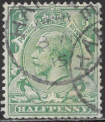 |
| Colonial Stamp Company | Gibraltar Scott 76-92 Gibbons 89-107 Superb Used Set of Stamps - colonialstamps.com | 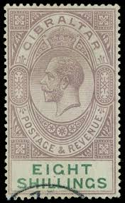 |
| ibredguy.co.uk | Orange River Colony | 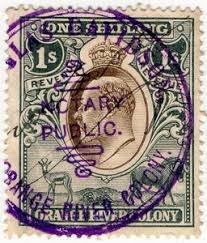 |
| Empirephilatelists.com | Gibraltar 1912 4s Black & Carmine SG83 Good Used Stamp | King George V (1910-1936) Stamps | Used Gibraltar Stamps | 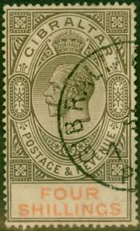 |
| eBay | 1902 - 1911 Great Britain Edward VII Half Penny Green Stamp (Used) | eBay | 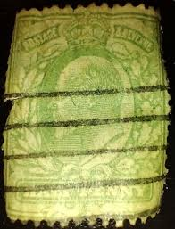 |
| Amazon.in | Buy British India KE King Edward 2 Annas Used Stamp Bond Paper Online at Low Prices in India - Amazon.in | 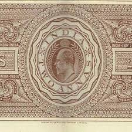 |
| Stamp Auction Network | Prices Realized | 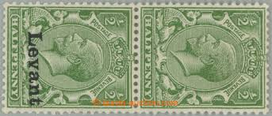 |
| Empirephilatelists.com | Gibraltar 1911 8s Purple & Green SG74 Fine Lightly Mtd Mint| Empirephilatelists.com | 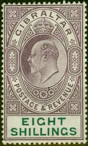 |
| Stamp Community Forum | British - King Edward VII Half Penny Watermark Questions - Stamp Community Forum | 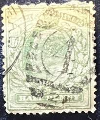 |
| eBay | 1982 Chinese Paper Money for sale | eBay | 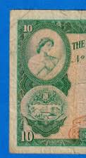 |
| eBay | King George V Three Halfpence 1½d Brown Australia Postage Stamp | eBay | 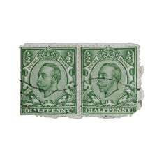 |
| PicClick | 1907 GIBRALTAR SC 59a KEVII 2 Shillings - MH Mint OG F/VF $48.50 - PicClick | 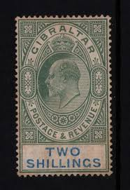 |
| eBay | 1979 Chinese Paper Money for sale | eBay | 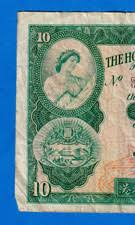 |
| Ken Pugh Stamp Forgeries | Facebook | 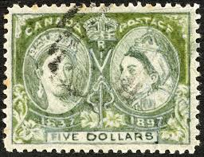 | |
| eBay | 1901-1910 Year of Issue Postal Stationery for sale | eBay | 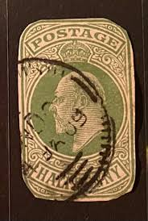 |
| Dreamstime.com | A Montage of Green 1A Postage Stamps from India. Editorial Image - Image of coin, podtge: 282845470 | 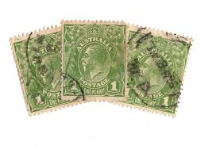 |
| PicClick | GIBRALTAR 1907 SC 59a KING EDWARD VII 2sh GREEN & ULTRA MHR WM 3 VFINE $92.00 - PicClick | 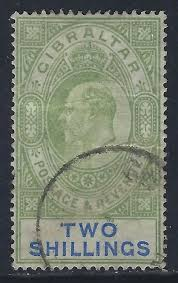 |
| eBay | Green Used Australian Victoria Stamps for sale | eBay | 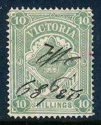 |
| eBay | 1940's 10 Sen Post War Military Currency- Japan | eBay | 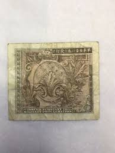 |
| eBay | 1983 Chinese Paper Money for sale | eBay | 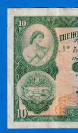 |
| PicClick | GIBRALTAR 1904-08, 2S. Green & Blue Stamp Mh $22.03 - PicClick | 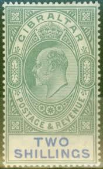 |
| Catawiki | Canada Set of stamps. Buy unique objects. Now at auction for sale | Catawiki | 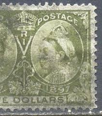 |
| eBay | GB 1902 KING EDWARD 7TH 1/2d IMPERFORATE PLATE PROOFS | eBay | 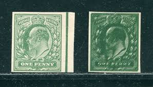 |
| World Stamps Project | Great Britain, George V: Varieties of Postage Stamps – World Stamps Project | 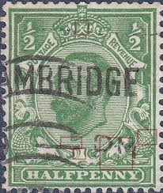 |
| gadcangonama.gob.ec | UK King George V Halfpenny Stamp Green Postage Mail Vintage Vtg Great Britain | 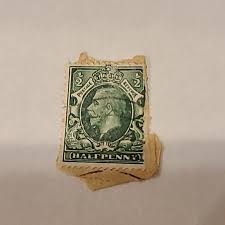 |
| HipStamp | Gibraltar 1905 2s Green&Blue WMK MCA PlainPap SG 62 Scott 59 VFU Cat £140($186) | Europe - Gibraltar, General Issue Stamp / HipStamp | 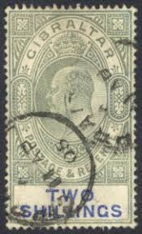 |
| WordPress.com | Bechuanaland Protectorate #96 (1927) – A Stamp A Day | 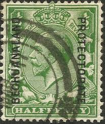 |
| Paul Fraser Collectibles | British Stamp Heritage – Penny Black through Victorian Red Issues – Tagged "King Edward VII stamps" | 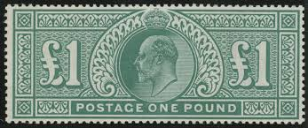 |
| Australian Stamp Catalogue | http://www.australianstrampcatalogue.com | 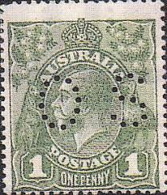 |
| eBay | Great Britain #133 On Piece CV $75 - Lot #4806 | eBay | 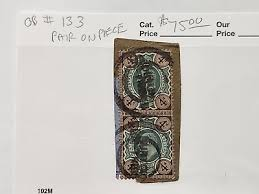 |
| Roots.sg | Used block of four King Edward VII 1-cent with unrecorded circle of large square cancellations. | 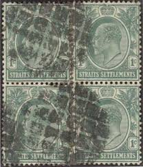 |
| Colnect | Peru : Stamps [Year: 1909] [1/4] : Colnect 📮 | 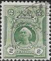 |
| eBay | KAPPYSSTAMPS UGANDA #73, 74, 75 1898 VICTORIAN STAMPS USED LIGHT CANCELS G102 | eBay | 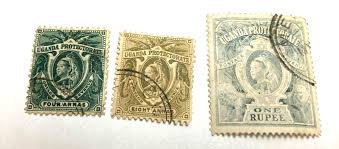 |
| HipStamp | Gibraltar # 59a, King Edward VII, Mint Hinged, 1/2 Hinged Cat. | Europe - Gibraltar, General Issue Stamp / HipStamp | 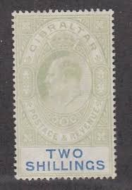 |
| Headington.org.uk | Headington's post office history | 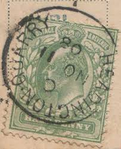 |
| eBay UK | Edward VII Gibraltar Stamps 1902-1910 for sale | eBay UK | 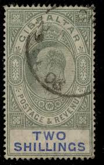 |
| eBay | GREAT BRITAIN SG-232, SCOTT # 132, USED, FINE, GREAT PRICE! | eBay | 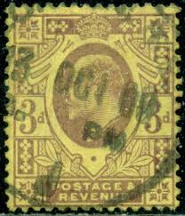 |
| Stamp Community Forum | Sampling Of Postmarks On ½ Penny GB KeVII. - Stamp Community Forum | |
| eBay | GREAT BRITAIN SG249, SCOTT # 145, USED, VERY FINE, GREAT PRICE! | eBay | |
| eBay | $10 Uncirculated Grade 55 US Paper Money for sale | eBay | |
| APMEX | 2nd Issue Fractional Currency 5 Cents AU-58 EPQ PCGS (Fr#1232) | |
| HipStamp | Browse Listings in Europe > Gibraltar / HipStamp | |
| Greysheet | National Bank of Egypt 5 Egyptian pounds B111b,P13 03 11 1919 22 04 1920 s/n with comma Prefix W/36 W/46 Pricing Guide | The Greysheet | |
| Revenue-Collector.Com | U.S. 3rd Issue Revenue Stamps (1871) - Revenue-Collector.Com | |
| Richter Stamps | Transvaal – Richter Stamps | |
| GetArchive | 16 Two Circle Postmarks Image: PICRYL - Public Domain Media Search Engine Public Domain Search} | |
| eBay | Good (G) Royalty Great Britain George V Stamps for sale | eBay |